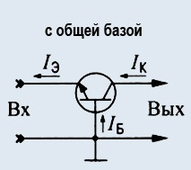
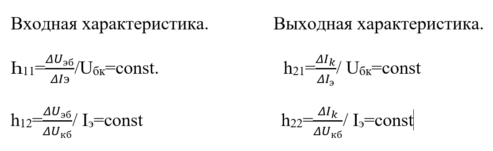
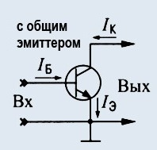
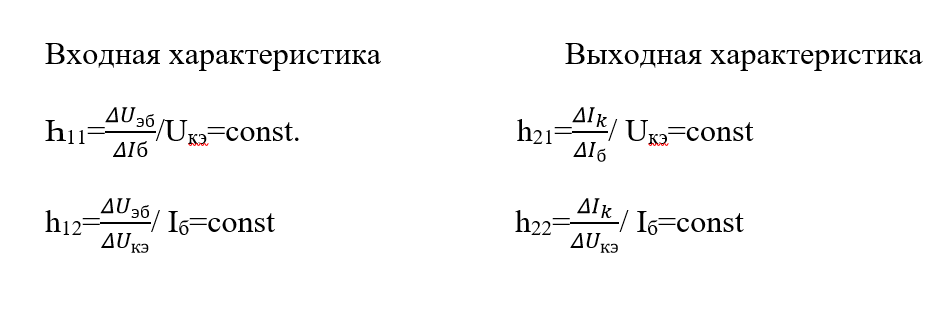
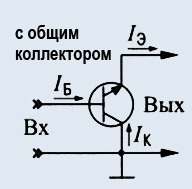
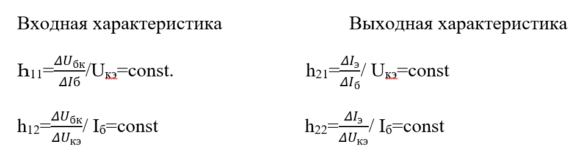

 Такая схема включения не
дает значительного
усиления, но обладает хорошими частотными и температурными свойствами. Применяется
она не так часто,
как схема ОЭ.Коэффициент усиления
по току схемы ОБ всегда немного меньше еденицы. Этот коэффициент всегда меньше 1 и
чем он ближе к 1,
тем лучше транзистор. Коэффициент усиления по напряжению получается таким же, как и
в схеме ОЭ.
Входное сопротивление схемы ОБ в десятки
раз ниже, чем в схеме ОЭ.Для схемы ОБ фазовый сдвиг между входным и выходным
напряжением отсутствует,
то есть фаза напряжения при усилении не переворачивается. Кроме того, при усилении
схема ОБ вносит
гораздо меньшие искажения, нежели
схема ОЭ.

Схема с общим эмиттером.
Схема с общим эмиттером (ОЭ). Во всех книжках написано, что эта схема является
наиболее
распространненой, т. к. дает наибольшее усиление по мощности. К достоинствам схемы
ОЭ можно отнести
удобство питания ее от одного источника, поскольку на базу и коллектор
подаются питающие напряжения одного знака. К недостаткам относят худшие частотные и
температурные
свойства (например,в сравнении со схемой ОБ). С повышением частоты усиление в схеме
ОЭ снижается. К
тому же, каскад по схеме ОЭ при усилении
вносит значительные искажения.


Схема с общим коллекторам.
 Такая схема чаще
называется эмиттерным
повторителем. Особенность этой схемы в том, что входное напряжение полностью
передается обратно на
вход, т. е. очень сильна отрицательная
обратная связь. Коэффициент усиления по току почти такой же, как и в схеме ОЭ.
Коэффициент усиления по
напряжению приближается к единице, но всегда меньше ее. В итоге коэффициент усиления
по мощности
примерно равен ki, т. е. нескольким
десяткам.
В схеме ОК фазовый сдвиг между входным и выходным напряжением отсутствует.
Поскольку
коэффициент усиления по напряжению близок к единице, выходное напряжение по фазе и
амплитуде совпадает
со входным, т. е. повторяет его. Именно
поэтому такая схема называется эмиттерным повторителем. Эмиттерным - потому, что
выходное напряжение
снимается с эмиттера относительно общего провода.Входное сопротивление схемы ОК
довольно высокое
(десятки килоом), а выходное - сравнительно
небольшое. Это является немаловажным достоинством схемы.

Задача №1 Решение задач. Дано: УК с ОЭ. Uбэ1=0,25
В. Uбэ2=0,35 В.
Iб1=100 мкА. Iб2=200 мкА. Uкэ1=3 В. Uкэ2=6 В. Iк1=3мА.
Iк2=9,5 мА. Найти: һ-параметры и коэф.усиления по мощности. Решение: ΔUбэ=0,35-0,25=0,1 В. ΔIб=200-100=100 мкА. ΔUкэ=6-3=3
В.
ΔIк=9,5-3=6,5 мА. Һ11==0.1/100*10-6=1000.
h21==6.5*10-3/100*10-6=65. h22==6.5*10-3/3=2.16*10-3. KI=Ik/Iб=65.
Ku=Uкэ/Uбэ=30. Кр= KI* Ku=1950.
Контрольные вопросы:
Какие характеристики имеются в биполярных транзисторах?